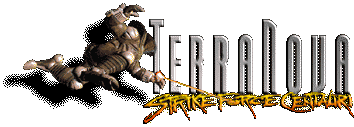
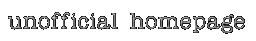

Well then, here it is: the first and only homepage of Terra Nova!
Actually this page is not finished yet and won't be finished in the near
future either. That's because I'm currently working on my Master Thesys and
so I don't have time to do all the private stuff I want to do. But nevertheless
here is some kind of preview. What you can find here is something about the
missions and how you can modify the supplied missions to something new.
last modified: 15.5.97 - 13:30cet
Back to Joerg Fischer's Homepage
(this page is only available in German)